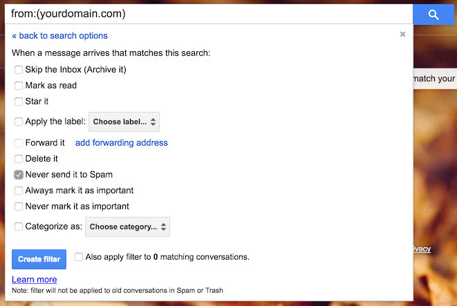

Pejibaye Blog
Pejibaye Blog
Setting up sendmail to redirect emails
Disclaimer: the instructions below are for Ubuntu, but they should work for most distros, the biggest difference is that the configuration files might be located elsewhere.
If you're like me, you have a main email address and other email addresses set up in other domains.
I dislike having to check all my email addresses individually, so I set up my mail servers to redirect all the email to my main address automatically.
Sendmail has an aliases feature that makes this very simple to set up.
Let's say you want to redirect emails this way:
-
webmaster@yourdomain.com->example@gmail.com, someoneelse@gmail.com -
help@yourdomain.com->helper@gmail.com -
support@yourdomain.com->helper@gmail.com
Follow these steps as root:
-
Change the
/etc/mail/aliasesfile to look like this:webmaster: example@gmail.com, someoneelse@gmail.com help: helper@gmail.com support: help
As you can see, each line in the file matches an origin email to a destination email. Each line can reference previous entries as well.
-
After changing the file, run:
$ newaliases
-
Make sure port 25 is open on your machine, so sendmail is able to listen for incoming email:
$ iptables -A INPUT -p tcp --dport 25 -j ACCEPT
Also make sure to save the iptables rules so they will be restored when the service restarts. This varies by distro, so it's better to google something like
iptables save <your distro>. -
Change
/etc/mail/sendmail.mcso sendmail receives email from the outside world.Change this line:
DAEMON_OPTIONS(`Family=inet, Name=MTA-v4, Port=smtp, Addr=127.0.0.1')dnl
to
DAEMON_OPTIONS(`Family=inet, Name=MTA-v4, Port=smtp')dnl
We're not done modifying this file yet. Now we need to verify that the domain in the configuration matches your server's domain. If not, change it:
MASQUERADE_AS(`yourdomain.com')dnl
-
After saving the file, you need to regenerate
sendmail.cf:m4 /etc/mail/sendmail.mc > /etc/mail/sendmail.cf
-
Add your domain to
/etc/mail/local-host-names. This file has a domain per line. If your domain is not there, add it on a new line. -
Restart sendmail:
$ /etc/init.d/sendmail restart
Depending on the configuration of your email client or web UI, the emails might end up stuck in a spam folder, so make sure to check there.
If you use Gmail, you can make a filter to avoid sending your redirected emails to spam. To do so:
- Do a search for
from:yourdomain.com. - Click on "Create a filter with this search".
- Check the "Never send it to Spam" box.
- Click on "Create filter".
